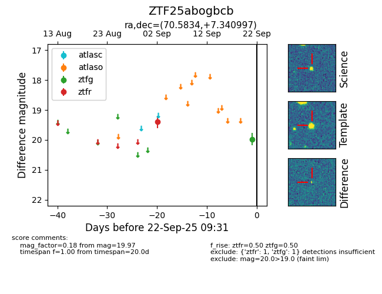

FINK: ZTF25abogbcb
Lasair: ZTF25abogbcb
ALeRCE: ZTF25abogbcb
ZTF25abogbcb (ztf,fink)
equatorial (ra, dec) = (70.5834,+7.34100)
galactic (l, b) = (189.9741,-24.39940)

last ztfg=19.97, ztfr=19.40
1 ztfg, 1 ztfr detections